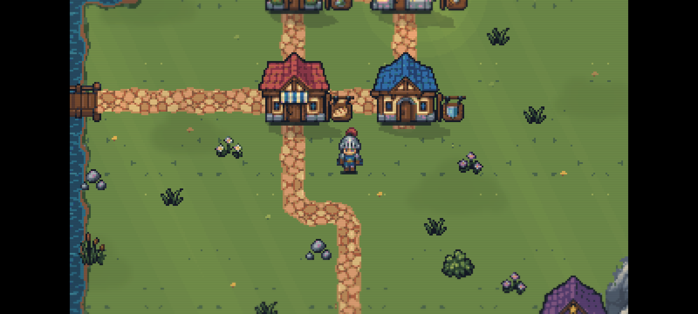
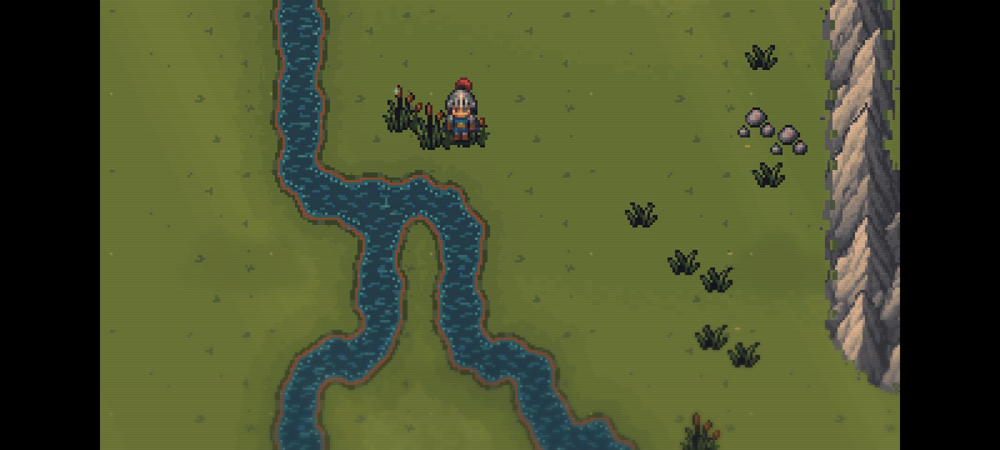
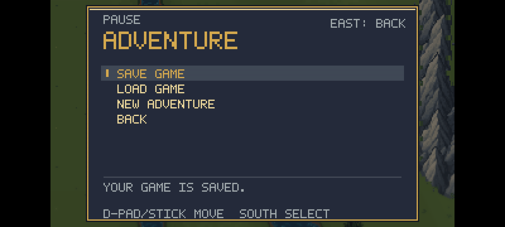
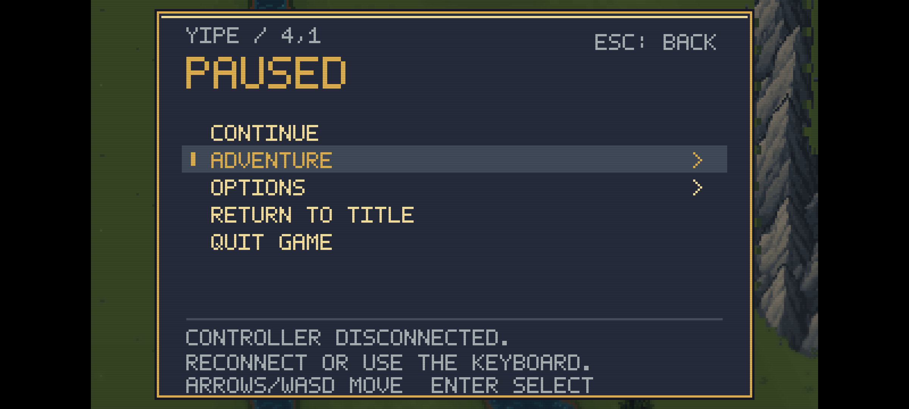

The native music player was checked separately: active Vorbis streaming and looping, pause/mute on Home, and resumed playback after returning. Listening on a physical Android device remains unverified.




The desktop solution still builds without Android tools. Its windowing, save location and GPU lighting path remain intact. The Android light map was compared pixel by pixel with the desktop rendering, including overlapping lights, camera clipping and cave contours.
| Verification | Result |
|---|---|
| Release builds | Android + macOS: zero warnings or errors |
| Core / persistence | 660 checks passed |
| Menus / controls / music | 163 focused checks passed |
| Lighting | 68 checks passed; software/GPU agreement within one channel level |
| macOS normal startup | Ident/title, resize, fullscreen, return to window and save preservation passed |
| Packaged assets | All 208 match the source in both builds; APK signature and alignment verified |
| Android pacing | About 60 FPS during a 14.2-second emulator sample; 851 app frames, zero reported drops |
Complete test record and APK checksum · Build and install instructions · macOS startup capture